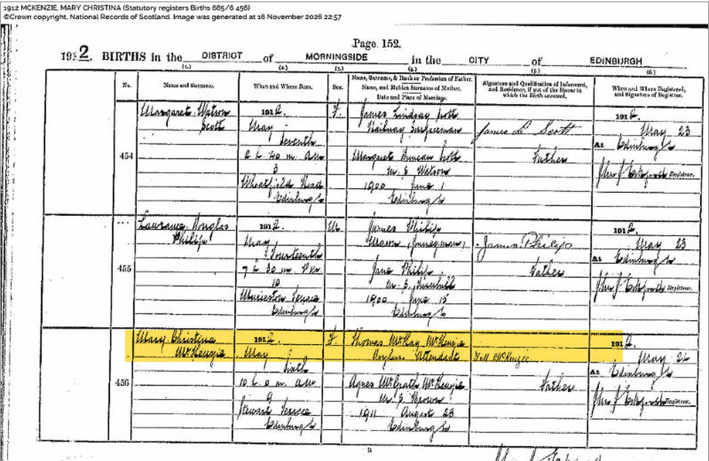

Item 23 · May 6, 1912
Birth registration: Mary Christina McKenzie
The document

This copy carries yellow highlighting or red outlining added for the book site. It is not on the original.
Tap an image to open it full size.
Transcription, word for word
Everything as written, including misspellings. [?] marks an uncertain reading. Struck-through words are marked as struck through. Notes in square brackets describe the page and are not part of it.
[Printed header] 1912 MCKENZIE, MARY CHRISTINA (Statutory registers Births 685/6 456) [Printed] ©Crown copyright, National Records of Scotland. Image was generated at 16 November 2026 22:57 Page 152. 1912. BIRTHS in the DISTRICT of MORNINGSIDE in the CITY of EDINBURGH [Column headings, printed, as on all Scottish birth registers] No. 454 Name: Margaret Watson Scott Born: 1912. May Seventh 2h. 40m. Am. 3 Wheatfield Road Edinburgh Sex: F Father/Mother: James Lindsay Scott Railway Surfaceman. Margaret Duncan Scott M.S. Watson. 1900 June 1 Edinburgh Informant: James L Scott Father Registered: 1912. May 23 At Edinburgh John J Ashford[?] Registrar. No. 455 Name: Laurence Douglas Philip Born: 1912. May Fourteenth 7h. 30m. Pm. 10 Wheatfield[?] Terrace Edinburgh Sex: M Father/Mother: James Philip Mason (Journeyman). Jane Philip M.S. Threshill[?]. 1900 June 15 Edinburgh Informant: James Philip Father Registered: 1912. May 23 At Edinburgh John J Ashford[?] Registrar. No. 456 Name: Mary Christina McKenzie Born: 1912. May Sixth 10h. 0m. Am. 9 Stewart Terrace Edinburgh Sex: F Father/Mother: Thomas McKay McKenzie Asylum Attendant. Agnes McGrath McKenzie M.S. Brown. 1911 August 28 Edinburgh Informant: Thos McKenzie Father Registered: 1912. May 21 At Edinburgh John J Ashford[?] Registrar. [Signature] John J Ashford[?] Registrar.